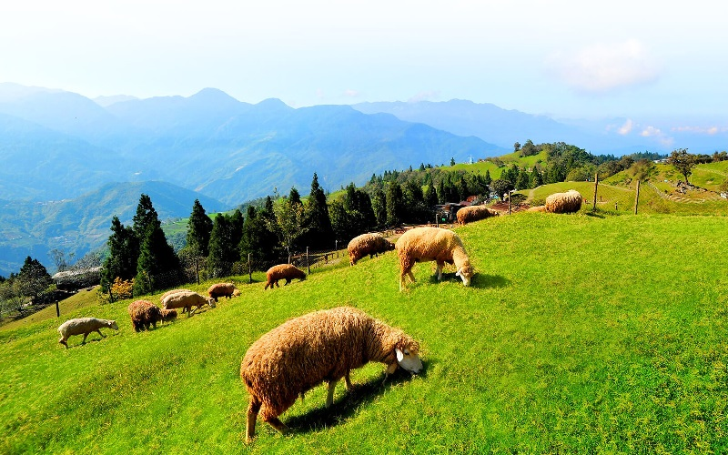

Cingjing Farm
Nantou County
Cingjing Farm

Cingjing Farm locates in Ren'ai Township, Nantou County, at an altitude of 1,700-2,000 meters. The average temperature
of this area ranges from 15-23 degree Celsius, which makes it a good place to get away from the hot weather in summer
for people in Taiwan. The Green Green Grassland, which features herds of sheep grazing on the grassy hill, is the most
famous spot in the farm. Because they are so friendly, tourists have the option of buying sheep feed to have an closer
experience. There are also many other activities here, such like hiking at the trails, watching sheep shearing shows and
wool DIY handcraft workshops.
- Official Website:https://www.cingjing.gov.tw/en/mien/
- Best seasons: summer
- Transportation: Take Nantou Bus at Taichung Train Station to respective stations at Qingjing Farm.